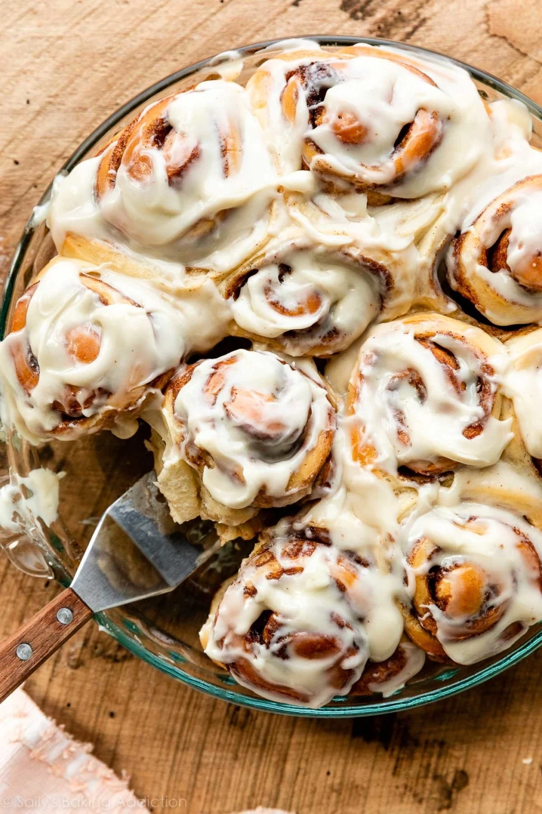

Cinnamon Rolls

Description
Do you love homemade cinnamon rolls, but are nervous to bake with yeast? You’re not alone! But if you’re curious about learning how to bake with yeast, this recipe is a perfect one to start with. No yeast cinnamon rolls are quick and tasty, but the Fluffiness Factor (I should trademark that) is simply unparalleled when it comes to yeast rolls vs. no-yeast rolls.
Unlike these homemade overnight cinnamon rolls that require hours of rise time, plus a 2nd rise after the rolls are shaped, this easy cinnamon rolls recipe requires only 1 rise, for just 60–90 minutes. And, honestly, they’re every bit as delicious. Bakery-style perfection for beginners!
Ingredients
Dough
- 2 and 3/4 cups all purpose flour
- 1/4 cup granulated sugar
- 1/2 teaspoon salt
- 3/4 cup whole milk
- 3 tablespoons unsalted butter
- 2 and 1/4 teaspoons Platinum Yeast from Red Star
- 1 large egg at room tempature
Filling
- 3 tablespoons unsalted butter extra softened
- 1/3 cup packed light or dark brown sugar
- 1 Tablespoon ground cinnamon
Cream Cheese Icing
- 4 ounces full-fat block cream cheese softned to room temperature
- 2 Tablespoons unsalted butter
- 2/3 cup confectioner's sugar
- 1 teaspoon pure vanilla extract
Steps
- Make the dough: Whisk the flour,sugar, and salt together in a large bowl
- Combine the milk and butter together in a heatproof bowl. Microwave or use the stove and heat until the butter has melted and the mixture is warm to the touch (about 110°F/43°C, no higher). Whisk in the yeast until it has dissolved. Pour mixture into the dry ingredients, add the egg, and stir with a sturdy rubber spatula or wooden spoon OR use a stand mixer with a paddle attachment on medium speed. Mix until a soft dough forms
- Transfer dough to a lightly floured surface. Using floured hands, knead the dough for 3-5 minutes. You should have a smooth ball of dough. If the dough is super soft or sticky, you can add a little more flour. Place in a lightly greased bowl (I use non-stick spray), cover loosely, and let the dough rest for about 10 minutes as you get the filling ingredients ready.
- Fill the rolls: After 10 minutes, roll the dough out in a 14×8-inch (36×20-cm) rectangle. Spread the softened butter on top. Mix together the cinnamon and brown sugar. Sprinkle it all over the dough. Roll up the dough to make a 14-inch log. Cut into 10–12 even rolls and arrange in a lightly greased 9- or 10-inch round cake pan, pie dish, or square baking pan.
- Rise:Cover the pan with aluminum foil, plastic wrap, or a clean kitchen towel. Allow the rolls to rise in a relatively warm environment for 60–90 minutes or until double in size. (For a tiny reduction in rise time, see my answer to Where Should Dough Rise? in my Baking with Yeast Guide.)
- Bake the rolls: After the rolls have doubled in size, preheat the oven to 375°F (190°C). Bake for 24–27 minutes, or until lightly browned. If you notice the tops are getting too brown too quickly, loosely tent the pan with aluminum foil and continue baking. If you want to be precise about their doneness, their internal temperature taken with an instant read thermometer should be around 195–200°F (91–93°C) when done. Remove pan from the oven and place pan on a wire rack as you make the icing. (You can also make the icing as the rolls bake.)
- Make the icing: In a medium bowl using a handheld or stand mixer fitted with a paddle or whisk attachment, beat the cream cheese on high speed until smooth and creamy. Add the butter and beat until smooth and combined, then beat in the confectioners’ sugar and vanilla until combined. Using a knife or icing spatula, spread the icing over the warm rolls and serve immediately.
- Cover leftover frosted or unfrosted rolls tightly and store at room temperature for up to 2 days or in the refrigerator for up to 5 days.